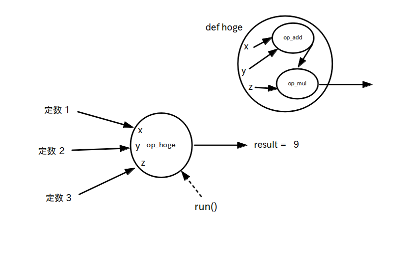

Python の関数オブジェクトを利用して OP ノードを自作することができます。
以下は (x+y)*z の演算を行う OP ノード hoge を作成する例です。内部で足し算 OP ノードと掛け算 OP ノードを使用しています。
import tensorflow as tf sess = tf.Session() #自作 OP ノード (x+y)*z def hoge(x, y, z): op_add = tf.add( x, y ) op_mul = tf.mul( op_add, z ) return op_mul op_hoge = hoge( 1, 2, 3 ) result = sess.run( op_hoge ) print( result ) # 表示結果 # 9
データフローグラフ
